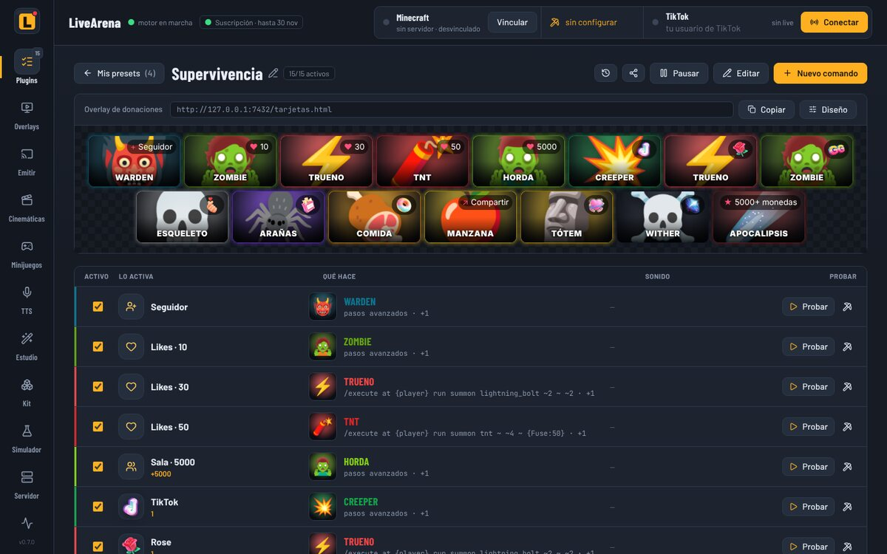

Base Defense
Defiende tu base de oleadas de infectados con armas, munición y suministros. Los espectadores mandan élites y jefes como el Wither o el Warden, o te salvan con munición y curas.
Para streamers de Minecraft en TikTok LIVE
Cada regalo, like o seguidor de tu directo desata algo en tu partida: una Luna que cae, un titán mecánico de 30 bloques, una horda o el tótem que te salva. Tus espectadores dejan de mirar y empiezan a jugar.
Envía un regalo y mira qué pasa
Escenas con cámara de cine, modelos propios, voces y efectos dentro de tu propio Minecraft. Cada una se dispara con el regalo que tú elijas y puedes decidir cuánto daño hace.
Destrucción total
Grabado tal cual dentro del juego con el mod LiveArena Cinemáticas.
No necesitas saber de servidores ni de plugins. La app lo prepara todo por ti.
Descarga el instalador para Windows y entra a nuestro Discord: te activamos una semana gratis. La app se actualiza sola.
La app monta un servidor de Minecraft en tu PC, instala Java, el mod de cinemáticas y el perfil del launcher. Entras siempre con localhost.
Escribe tu usuario de TikTok. Cuando estés en vivo, cada regalo, like, seguidor y comentario llega a la app al instante.
Elige un perfil listo o arma el tuyo: la Rosa manda un zombi, el León una cinemática, los likes llenan una meta. Pruébalo todo antes de salir en vivo.
Copia los overlays a OBS o TikTok LIVE Studio con un clic y empieza. El chat hace el resto.
Modos completos que se instalan desde la app. Los regalos ayudan o sabotean, y el marcador lo ve todo el mundo.
Defiende tu base de oleadas de infectados con armas, munición y suministros. Los espectadores mandan élites y jefes como el Wither o el Warden, o te salvan con munición y curas.
Cruza salas infinitas de piscinas sin hacer ruido. Si salpicas, algo despierta. El chat apaga las luces, te empuja o te da una bengala.
Una torre de 50 niveles por biomas con hielo, slime y saltos imposibles. El chat te empuja, te congela o te da una segunda oportunidad.
Cien niveles de caída libre: encuentra el hueco bueno entre trampas que brillan igual. Cada regalo cambia la caída.

Cada regalo, like o seguidor dispara una acción: monstruos, TNT, objetos, tótems, cinemáticas. Perfiles listos para empezar y una galería por categorías para elegir sin saber comandos.
Gratis 7 días
8 USD al mes
Un PC con Windows 10 u 11, Minecraft Java Edition y una cuenta de TikTok que pueda hacer directos (LIVE). La app instala por ti el servidor, Java y el mod de cinemáticas.
Sí. Los overlays son enlaces que pegas en cualquiera de los dos, y la sección Emitir deja OBS preparado para vertical con un clic.
No. Pulsas «Crear servidor», eliges qué hace cada regalo desde menús en español y entras al juego con localhost.
El mod LiveArena Cinemáticas es lo que muestra los modelos, la cámara de cine y los efectos. La app lo instala en tu launcher, y si usas TLauncher también.
Sí. Cada cinemática tiene su daño en corazones y los tótems que da, y puedes cambiarlo desde la app.
Entra a nuestro servidor de Discord: ahí pides tu licencia, te ayudamos a dejarlo todo listo y te enteras antes que nadie de las cinemáticas nuevas.
La app funciona en tu PC. No guarda contraseñas y la clave de transmisión de OBS no se almacena.